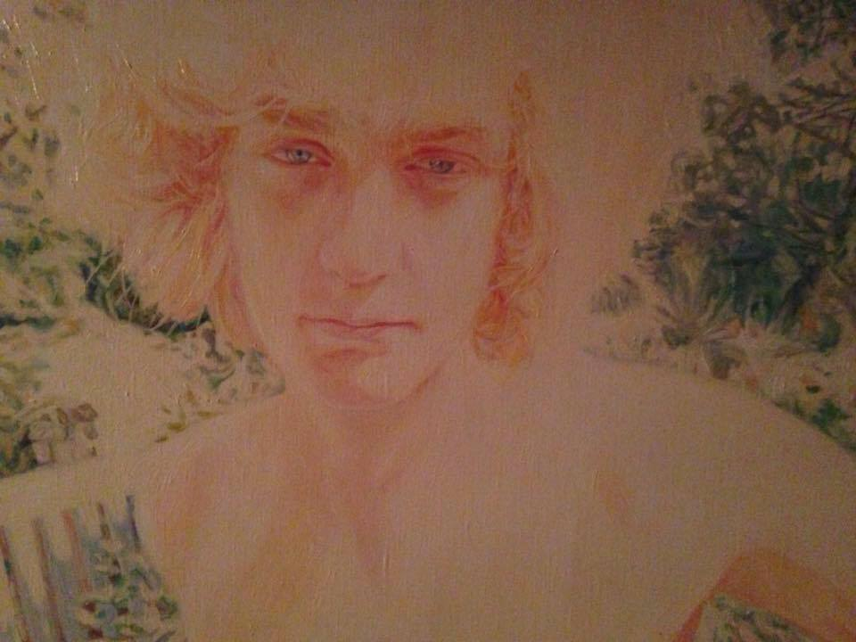

Itinéraire d'un enfant terrible
Partie 1 - Enfance et education, la paradigme de l’éléphant
La ligne directrice de l'arrogance
La pression façonne sa petite enfance
Une progression linéaire dans les hautes sphères éducatives
Franklin, école de l'arrogance
Stanislas, le choc des héros
HEC, les prémisces de sa dés-intégration (un pied de nez à sa prédestinée)
Le rondoudou
La flamb, une attitude inée qu'il exhibe dans les ghettos du ghota
De Courchevel à Saint-Tropez, les chemins dorés
Carte de France de Michelon (// chemins noirs de Tesson)
Partie 2 - Passage a la vie d’adulte, le paradigme du zebre,
L’anticonformisme au service de la constitution de sa personnalité
Rencontre avec Huguinho et sortie de route brésilienne
Partie 3 - a la conquête de la Chine, le paradigme de la cigale - décorrélation entre temps et travail
Startup nation

De la main de la meute
Ready to break this guy